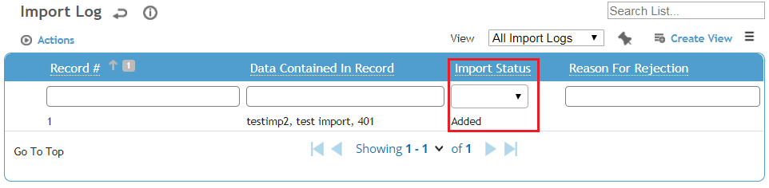
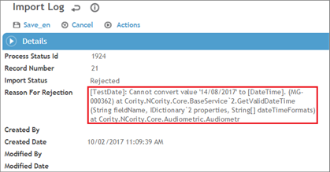
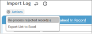
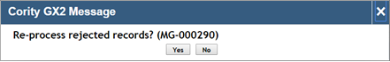
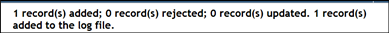
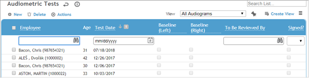
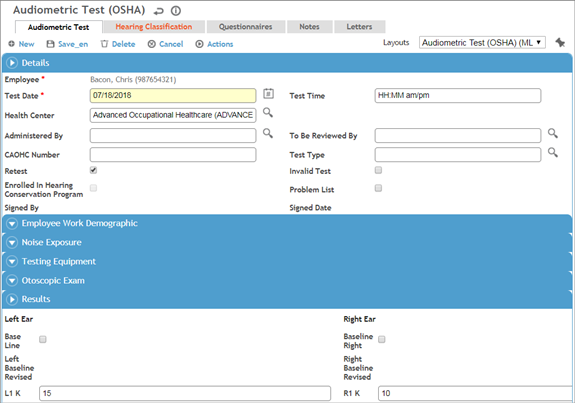

To verify that the results transferred successfully, you can either use the Cority Administrator Process Status & Log or navigate to the appropriate module itself. We recommend the former for ease of troubleshooting. The following subsections describe these options.
Once the results have been transferred from the device, in Cority you can navigate to Administrator > Process Status & Log to verify the transfer. The log displays a list of the import actions that have been performed. The most recent import action is displayed at the top of the list.
To view the details for a particular import action, click the user name associated with it. Use the dates and times associated with the actions to assist you in identifying the correct one.
When an import action is opened in the log, the records involved in the transfer are listed. The Import Status column provides the status of each imported record.

The statuses are:
You can filter the Import Status column to narrow your search.
If a record was rejected, you can use the Process Status & Log to determine why and to assist you in troubleshooting.
Click any record to open it and view additional information. For example, the Reason for Rejection is provided for each rejected record.

This helps you identify the issue that prevented the record from being transferred into Cority. A list of common Reasons for Rejection is provided in the Troubleshooting Issues section.
Once identified issues have been resolved, it is possible to either have the record re-processed or transfer the record again.
It is possible to edit the record and then have the record re-processed from within the Process Status & Log.

You will be prompted to confirm that you would like the record to be re-processed.


Before transferring the record again, you will need to address any issues with the setup of the device. Once you have addressed any issues, open the Device Import Engine and repeat the steps for transferring test results.
Once the test results have been transferred from the device, navigate to the main list for the appropriate module to verify the transfer. On the main list for the Audiometric module, select the All Audiograms view. On the main list for the PFT module, select the All Pulmonary Function Tests view. The most recently added test results are listed at the top. The test date is also provided in the view. On the main list for the Vision module, select the All Vision Tests view. The most recently added test results are listed at the top. The test date is also provided in the view.

Note: You can create a view to help you confirm that the test results were successfully transferred. For information about how to create a view, see the Cority User Guide.
To verify that a specific test result was transferred successfully, click the test record to open it and then review it for completeness. 